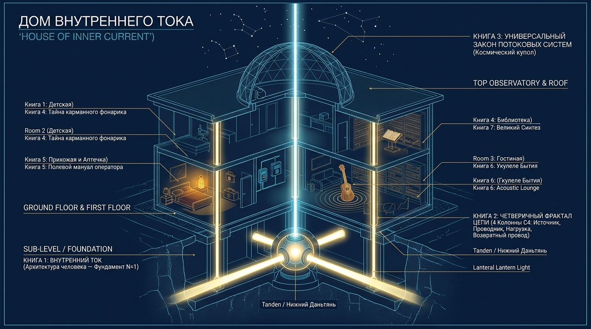

Внутренний ток
Книги и прикладные руководства
Архитектура «Дома Внутреннего Тока»: от соматического фундамента человека (N=1) и топологии четверичного фрактала (C₄) до термодинамики негэнтропии и макроистории цивилизации.
Дом Внутреннего Тока
Принцип познания природы строится строго снизу вверх (Ordo cognoscendi): от прямого соматического опыта живого тела (N=1) через инвариант систем (C₄) к космологическому закону термодинамики негэнтропии.

Книга 3: Универсальный закон потоковых систем
Термодинамика негэнтропии, открытые системы, экспорт энтропии наружу и формула КПД бытия H = P_load / P_total.
Книга 2: Четверичный фрактал цепи
Топологический инвариант (C₄): 4 узла цепи в природе, клетке, человеке, Биткоине и обществе. Теория депосреднизации (Zero Parasitic Rent).
Книга 1: Внутренний ток (Архитектура человека)
Соматический базис человека: карманный фонарик, реактор Тандэн, проводник Мусин (R_ego → 0), закон Джоуля — Ленца.
Семь книг библиотеки
Открытый доступКаждое издание решает прикладную задачу: от экстренного снятия соматического напряжения до построения целостной картины мира.
Внутренний ток: Архитектура Человека (Канон 3.0)
Канон Сверхпроводимости: соматика N=1, Русский синтез и протокол Self-Hosted Human
Новейший канон на базе 400+ исследований: Русский синтез (Толстой, Достоевский, закон Джоуля — Ленца Q = I²·R·t), Акустический монизм (Укулеле Бытия), деконструкция 4 эпидемий цивилизации, бортовое табло OBD-II и соматический суверенитет человека перед лицом AGI.
Четверичный фрактал цепи
Архитектурный инвариант природы: от клетки и фонарика до Биткоина и общества
Архитектурно-топологический инвариант: 44 страницы. 4 узла контура (Источник → Проводник → Нагрузка → Обратный провод). Теория депосреднизации (Zero Parasitic Rent), Биткоин Сатоши Накамото и налог Генри Джорджа.
Универсальный закон потоковых систем
Термодинамика негэнтропии, открытые системы и КПД бытия
Космологическая термодинамика: 45 страниц. Неравновесная физика Больцмана, Шрёдингера и Пригожина. Каноническая формула КПД потока H = P_load / P_total, три следствия и строгая фальсифицируемость по Карлу Попперу.
Тайна карманного фонарика
Внутренний ток для детей и подростков — как устроена твоя суперсила
Детский праймер: 11 страниц. Батарейка в животике, кнопка действия и чистый луч внимания. Почему обижаться — это жечь свои проводки, и как сберечь проводимость с юных лет.
Полевой мануал оператора
Карманная аптечка первой помощи — 30-секундный протокол соматической отладки
Скорая помощь при остром стрессе и выгорании: 31 страница. Сброс аварийных кодов ошибок DTC OBD-II сознания, соматический сброс, запуск с толкача Black Start и тест мурашек.
Укулеле Бытия
Акустическая физика счастливой жизни — материя, звук и резонанс Мусин
Чувственный монизм: 46 страниц. 400 граммов дерева, 4 струны и снятие дуализма Декарта. Как звук рождается из материи без мистики, и почему струна под зажимом эго дребезжит.
Великий Синтез (Master Edition 2.0)
Революции материи, трагедия духа и электродинамика человека
Макроисторический манифест: 52 страницы. 10 000 лет цивилизации: от открытия огня через конденсатор Уатта, автомобиль Карла Бенца и Биткоин к искусственному интеллекту. Преодоление 2500-летнего раскола Запада и Востока и замыкание двух абсолютных вершин познания (Дзен изнутри R_ego → 0 и диссипативные структуры Пригожина снаружи).
Тематические материалы и памятки
Отдельные прикладные документы, памятки и брошюры библиотеки.
Двухконтурный человек
Тело Пригожина (1977) и Дух Аньянова (2026)
Фундаментальный манифест: открытая система метаболизма против замкнутого квантового контура сознания. Парадокс здорового страдальца, вихрь в ванне и синдром сорванного яблока.
183. Итальянский триптих сверхпроводимости
Ольфакторно-акустический байпас неокортекса. Триада Versace и Леванте.
Переход в эпоху Автомобиля (1886–2026)
Трилогия Карла Бенца. Изобретение двигателя внутреннего сгорания как аналог электродинамики внимания.
Триптих Сверхпроводимости — Леванте
Леванте и Внутренний ток: физика созидательного действия и устранение паразитных звеньев.
Дзен-фонарик: 5 элементов цепи
Счастье и сознание подчиняются законам замкнутой электрической цепи. Попробуйте нажать кнопку «Хоцу», чтобы пустить ток «Мусин» через предохранитель «Дзансин» и зажечь лампочку «Гё»!
1. Тандэн (丹田) — Батарейка (Ядро энергии)
Тандэн — источник всей жизненной силы цепи. В фонарике это батарейка: автономное ядро энергии. В покое хранит 100% заряда в чистой тишине, не растрачивая ни микроватта вхолостую.
Пять принципов Внутреннего тока
Прикладная дзен-инженерия, точная схемотехника и снятие паразитного сопротивления.
Тандэн (丹田)
Автономный внутренний источник. Ресурс созидания, независимый от внешних оценок.
Мусин (無心)
Бесшовный поток внимания без паразитных омических потерь и самосуда.
Хоцу (発)
Чистый импульс воли. Замыкание цепи через непосредственное желание действовать без внутреннего насилия.
Дзансин (残心)
Внимательность и автоматический предохранитель при перегрузке (Circuit Breaker).
Гё (行)
Полезная работа: перевод внутреннего ресурса в осязаемый результат в реальном мире.
Кошачий дзэн: Осциллограф живого присутствия
Внутренний ток — не сухой механизм: он про изобилие жизни, поэзию и созерцание невыразимого. Дзэн-хайку и повадки кошек — два зеркала чистой проводимости без эго-шума.
Холодный дождь пошёл,
А я без шляпы...
Впрочем, какое мне до этого дело?
Кот выходит на веранду под моросящий дождь. Никаких жалоб на климат, никакого самобичевания: уши прижаты, лапы пружинят, сопротивление R_ego мгновенно обнулено. Мокрая шерсть — это просто физика, а не трагедия.